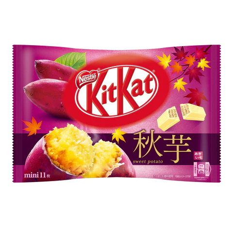
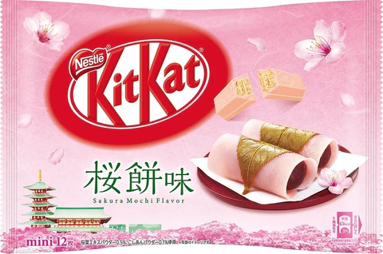
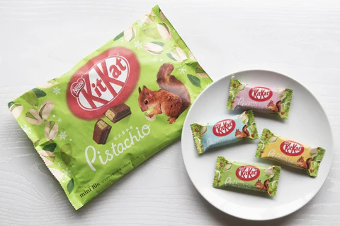
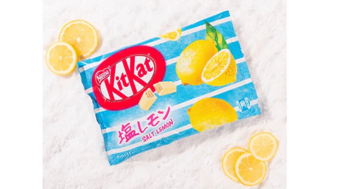

Head to Overall
Sweet Potato Flavor
It’s a huge deal in the fall, making it extremely fitting for it to come in a Kit Kat flavor.
Sakura Mochi
This flavor only comes around during the spring. Delicately flavored pink white chocolate is gently floral, an earthy sweetness comes from the azuki bean powder blended in.
Pistachio
This flavor seemed to have only been around during the spring months for a couple of years. The pistachio flavor comes from the cream in between the wafers.
Shio Lemon
The flavor or shio (salt) lemon might sound a bit questionable to some. These were only around in July 2023.